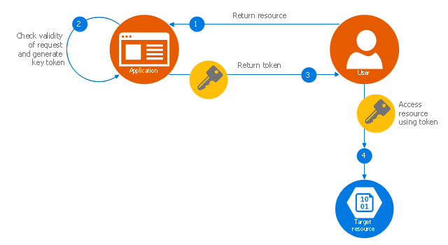

In cybersecurity, a valet key is an access management concept that provides limited or temporary access to a system or data. It is often used to grant temporary and restricted permissions to users or services without giving them full access.
Security:
Valet keys offer a higher level of security by restricting access to a specific, limited set of functions or data. This minimizes the risk of unauthorized access to critical or sensitive information.
Limited Privileges:
Valet keys grant only the privileges needed for a specific task or purpose. Users or applications with valet keys can perform necessary actions without the risk of unintended or malicious activities.
Least Privilege Principle:
Valet keys align with the principle of least privilege, which restricts users to the minimum access rights required to accomplish their tasks. This reduces the potential for misuse or abuse.
Identify Use Cases:
Identify specific use cases and scenarios where valet keys are needed. Determine which resources or functionalities require limited or temporary access.
Access Control Policies:
Develop access control policies that specify what actions users or applications with valet keys are allowed to perform and under what conditions.
Access Duration:
Determine the duration for which valet keys will be valid. You can set specific time limits or make them valid until a certain task is completed.